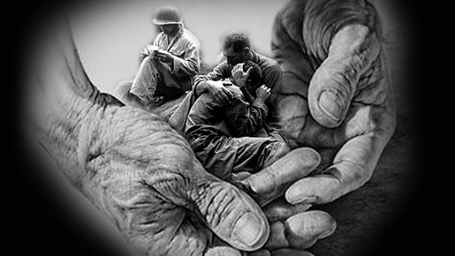

La guerra una y otra vez
La guerra, una y otra vez
La guerra es un tema que se repite en más de una ocasión a lo largo de la Historia. A través de este proyecto, vamos a conocer diferentes momentos históricos de guerra , sangre, sufrimiento, conflictos, muerte, y dolor, mucho dolor.

Queremos no solo conocer si no sobre todo reflexionar y sentir las consecuencias de los conflictos bélicos, acercarnos a sus víctimas. Por eso crearemos diferentes recursos (cartas, poemas, audios...) en los que expresemos las vivencias de las personas que sufren las guerras y nuestras propias ideas y sentimientos.
«La guerra es siempre una derrota de la humanidad»
Juan Pablo II

Obra publicada con Licencia Creative Commons Reconocimiento Compartir igual 4.0